LAST WEEK I POSTED A THREAD ON TWITTER COVERING RECENT HOUSING MARKET TRENDS AND THE OUTLOOK FOR MORTGAGE RATES:
#Mortgage rates are now at their highest level since January 2014. Will these higher borrowing costs dampen the spring homebuying season?
— 👻📈 𝙻𝚎𝚗 𝙺𝚒𝚎𝚏𝚎𝚛 😱📊 (@lenkiefer) April 19, 2018
Some thoughts (+ charts)... pic.twitter.com/BegOb7p6iq
Let’s unpack that thread and add a few more charts I’ve tweeted out in the past week. I’ll also share some links to posts where I’ve shared R code on how to make the particular plots we discuss.
Mortgage Rates
Let’s start where the thread began, with mortgage rates. Earlier this month I posted code chart to make this one:
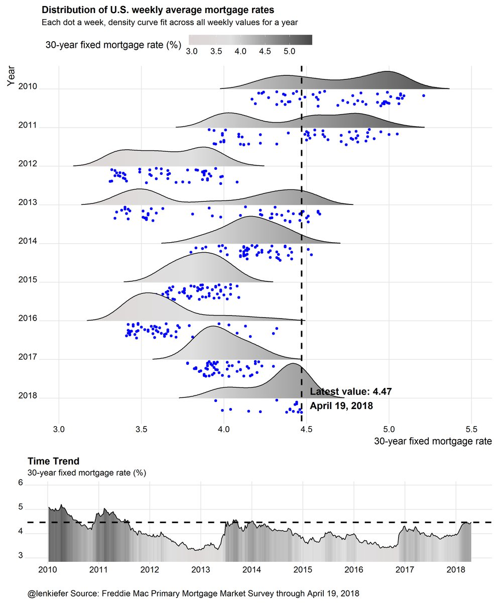
This chart shows that relative to recent history mortgage rates in the U.S. are relatively high.
How do recent mortgage rate increases compare to historical periods of rate increases? In this post we looked at how to make these charts that compared recent periods of mortgage rate increase.
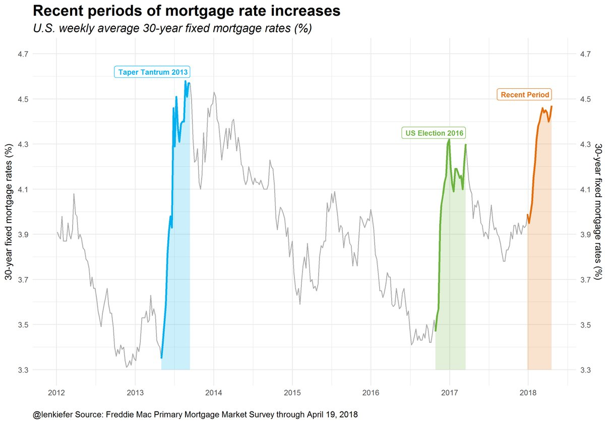
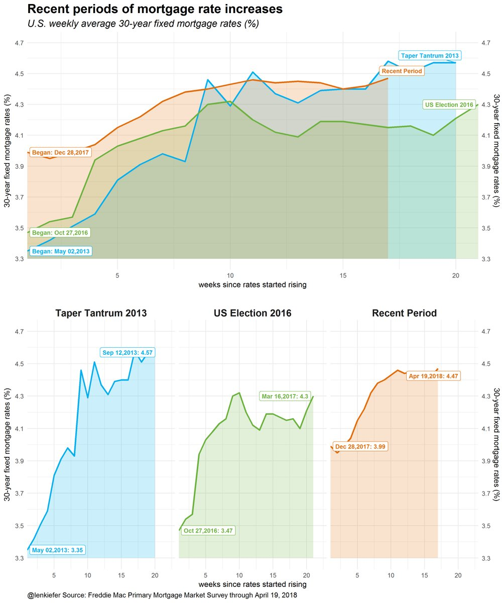
And how did home sales respond to recent historical periods of rate increases?

Jobs front
But so far, see e.g. today’s existing home sales report, home sales are holding up. Why? Well, for one, the economy is doing pretty well. Let’s take a look at the labor market.
National unemployment rate and employment growth trends
First, some national Unemployment rate and employment growth trends

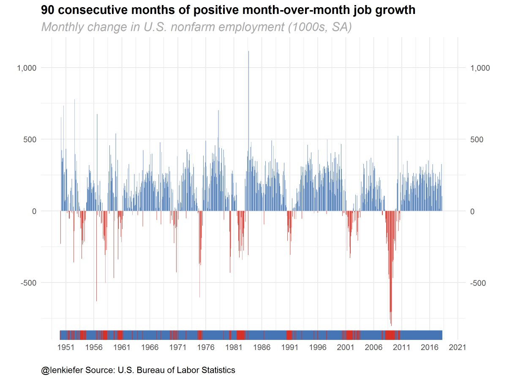
For U.S. macro trends code see here.
Job openings
Following this post we can plot labor market trends using the U.S. Bureau of Labor Statistics Job Openings and Labor Turnover Survey JOLTS data.
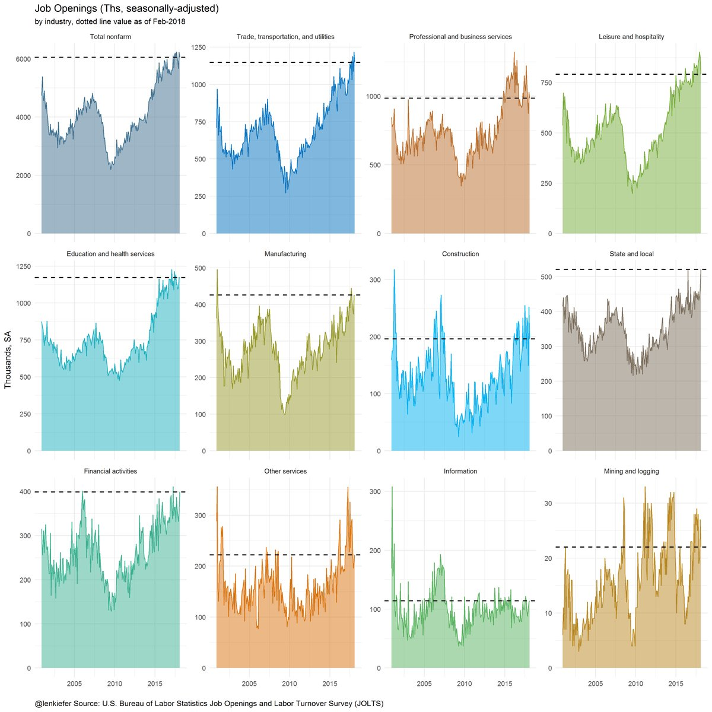
State unemployment trends
We can also look at state unemployment trends using a geofacet plot. See here for R code for these plots. Note some Twitter friends from the great state of Minnesota pointed out some disagreement with the geofacet location of Minnesota versus Wisconsin, so I trieds some alternative layouts: ?geofacet::us_state_grid1 vs ?geofacet::us_state_grid2.
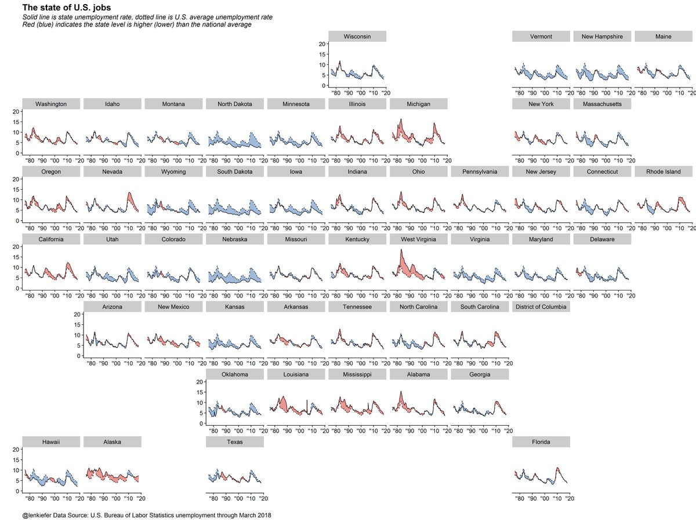
And zoooming in on the period since 2008.
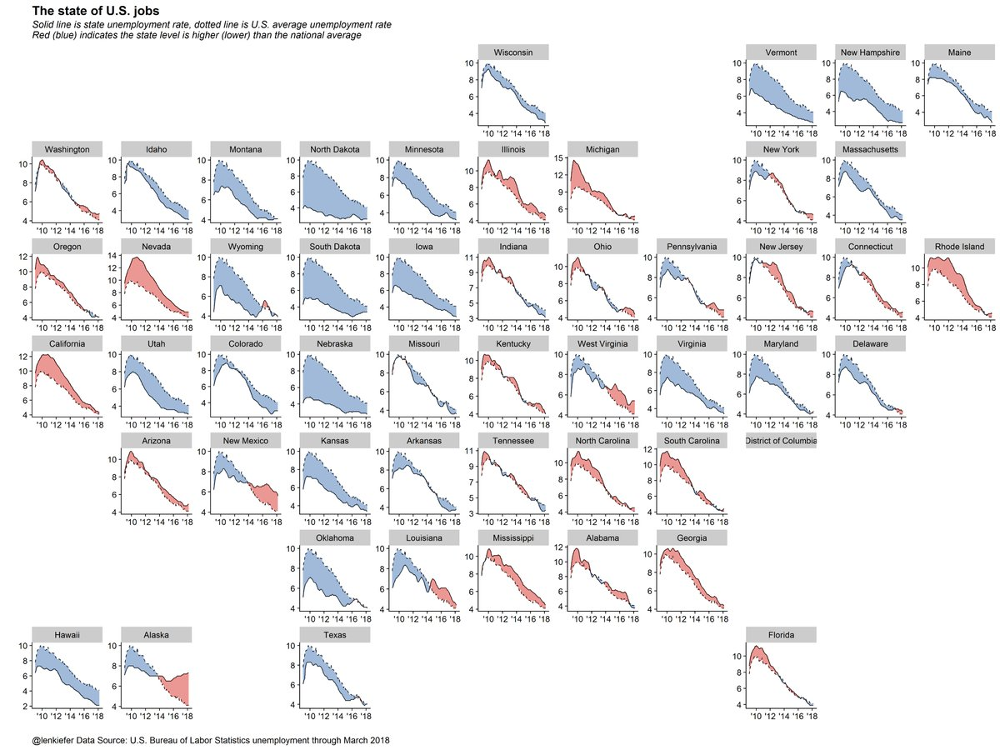
Housing construction
Housing construction is not keeping pace with strong demand supported by a robust labor market.
See here for R code on plotting starts.

House Prices
And as we have documented often, house prices have been rising due to demand outpacing supply. Here are a couple of alternative ways of looking at house price trends.
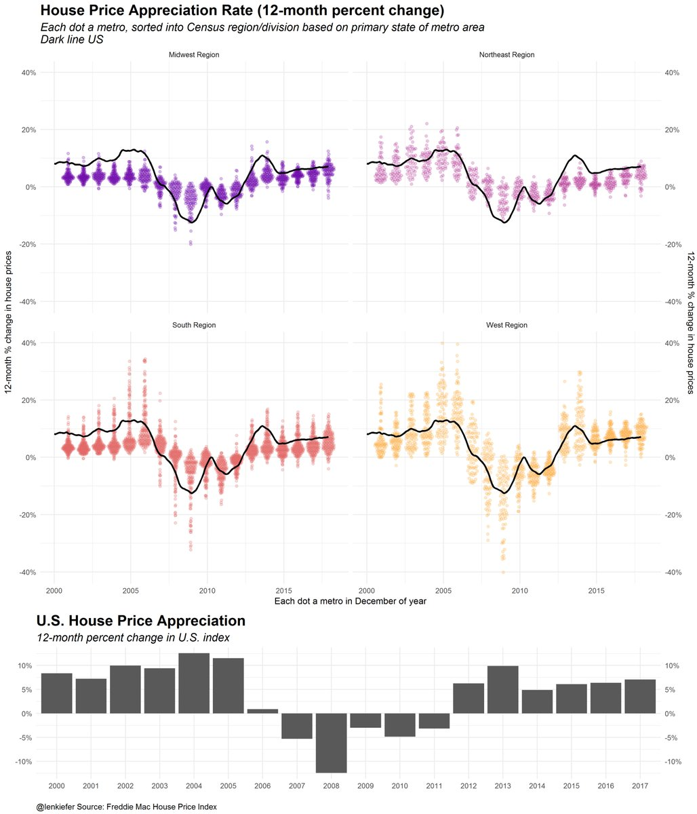
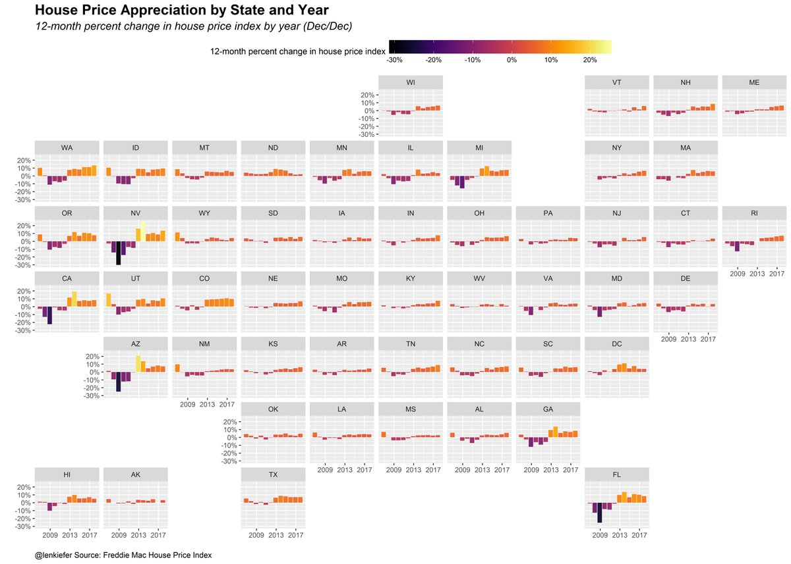
The outlook
So will higher mortgage rates and house prices dampen housing market activity?
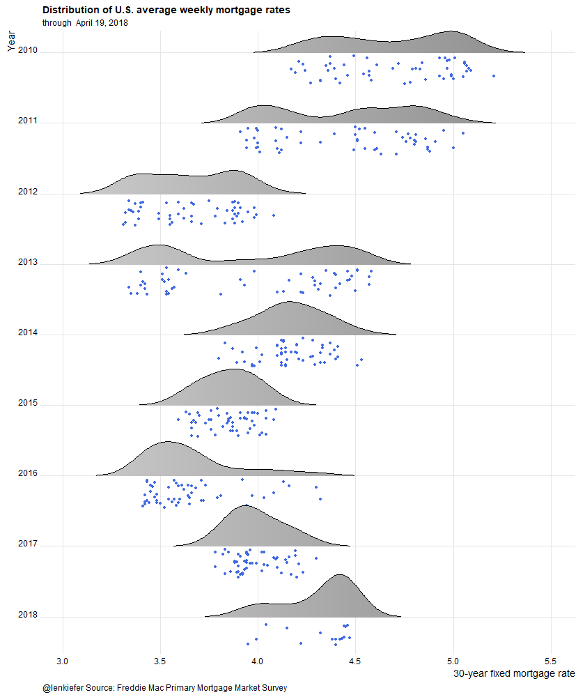
Or will the tailwinds from a stronger economy overcome these challenges? It’s too early to know for sure, but housing starts and home sales data through the first quarter support the thesis that housing market activity in 2018 may well hold up.
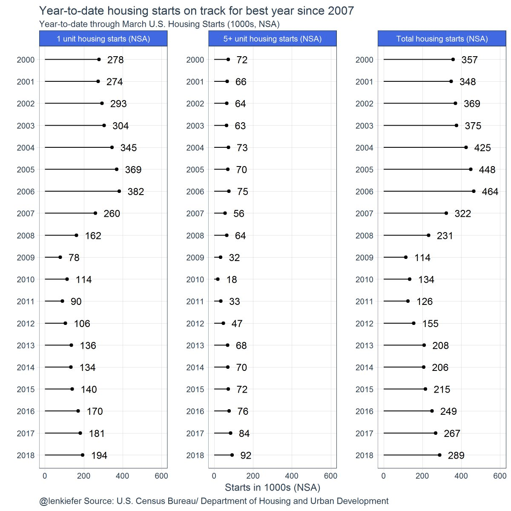
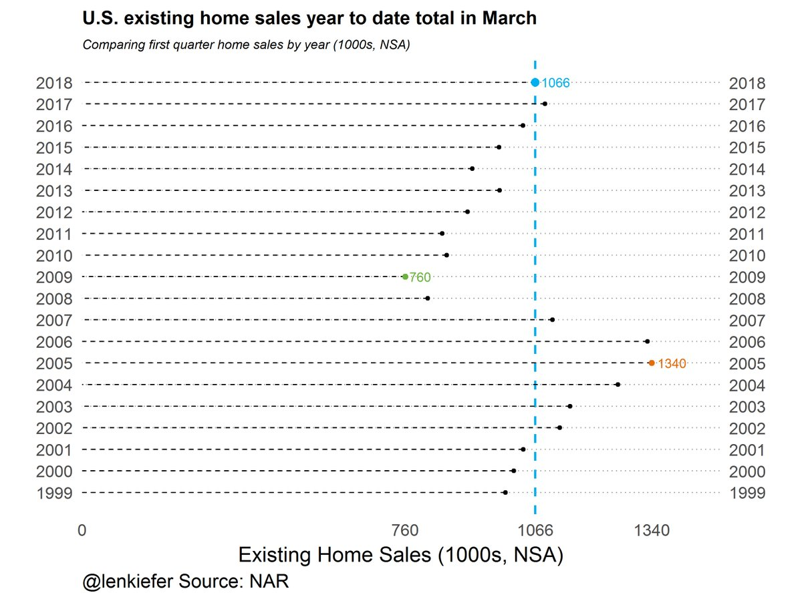
As I have said elsewhere, the broader economic environment remains favorable for home sales. But without new home construction and increased housing supply, home sales in the U.S. will have a hard time growing from current levels. If incomes grow and mortgage rate increases are gradual, then the housing market should post modest growth this year and next.